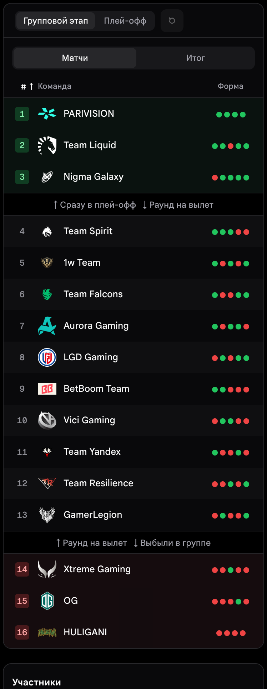
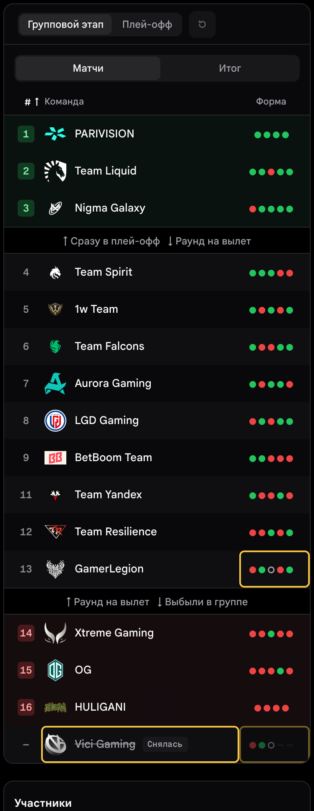
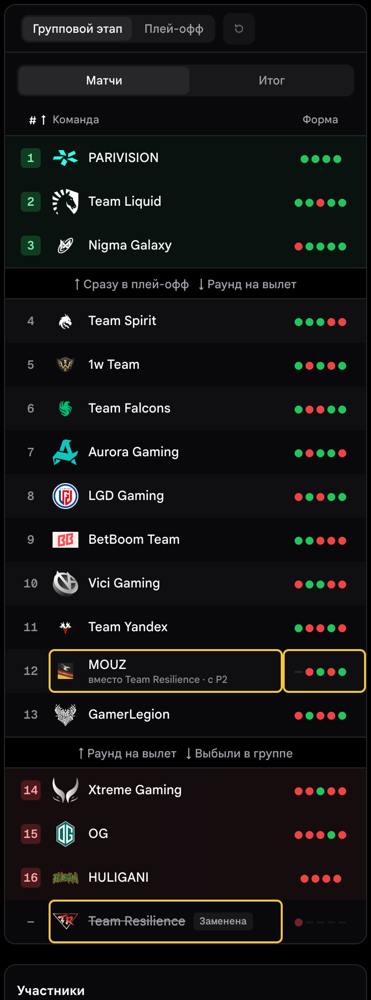
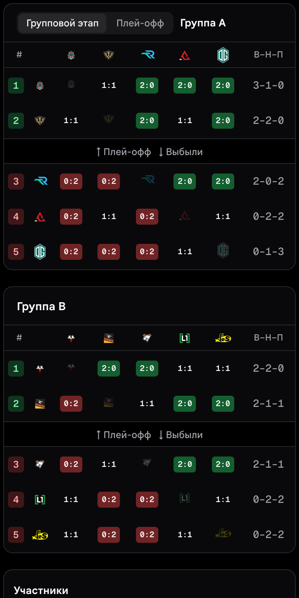
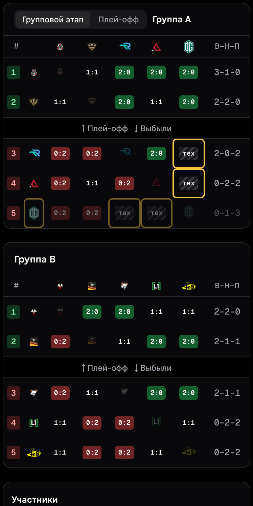
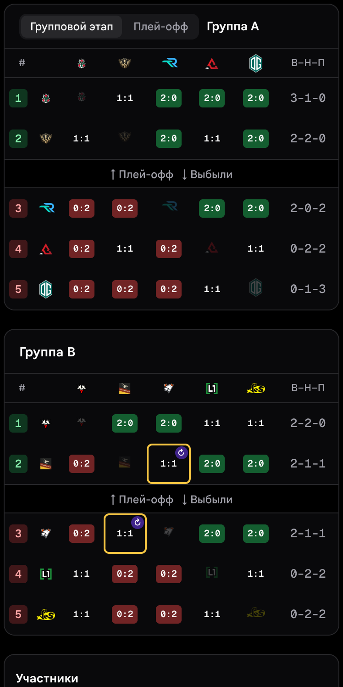
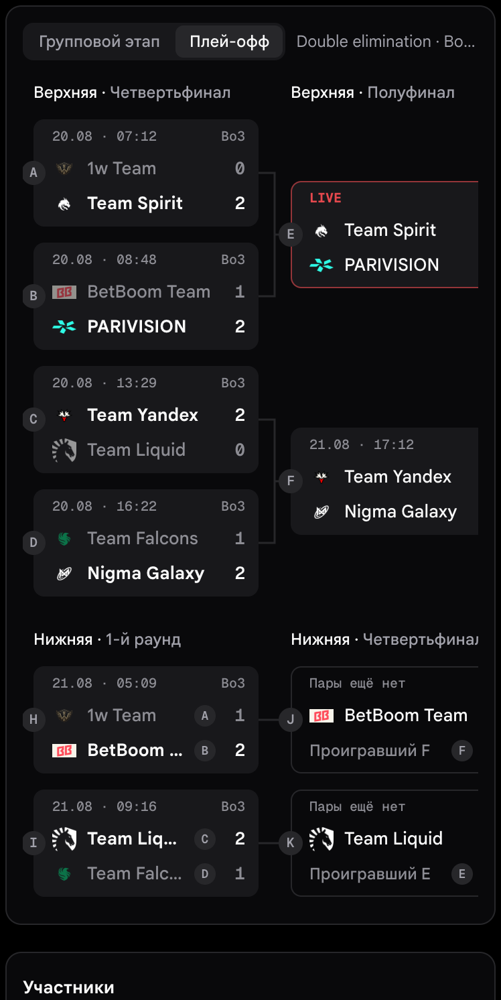
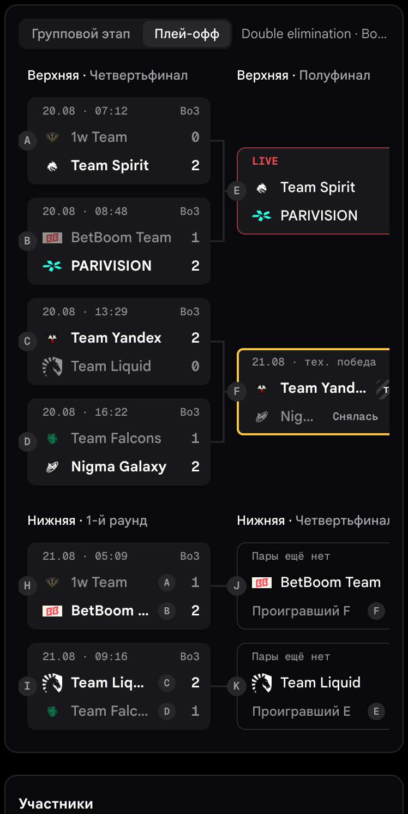

Швейцарка · как сейчас

Швейцарка · команда снялась

Швейцарка · замена команды

Группы · как сейчас

Группы · команда снялась

Группы · переигровка

Плей-офф · как сейчас

Плей-офф · команда снялась
